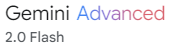
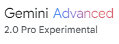

Procesamiento de prospectos
Hospital Universitari Arnau de Vilanova (Lleida)
2024-02-25
Índice
- Planteamiento del problema
- Extracción de datos
- UNSTRUCTURED TO STRUCTURED
- DB vectorial: Pinecone
- DB grafos: Neo4j Aura
Planteamiento del problema
Página CIMA

¿Qué es una API?
- API son las siglas de Application Programming Interface (Interfaz de Programación de Aplicaciones).
- Es un conjunto de reglas y especificaciones que permiten que diferentes aplicaciones de software se comuniquen e intercambien datos entre sí.
- Las APIs actúan como intermediarios, facilitando la interacción entre sistemas que de otro modo serían incompatibles.
¿Cómo funcionan las APIs?
- Una aplicación (el cliente) realiza una solicitud a través de la API a otra aplicación (el servidor).
- El servidor recibe la solicitud, la procesa y envía una respuesta con los datos solicitados.
- El cliente recibe la respuesta y puede utilizar los datos para realizar diversas funciones.
Ejemplo: Cuando utilizas una aplicación de viajes compartidos, la API de Google Maps se utiliza para mostrar el mapa y calcular la ruta. La API de la aplicación de viajes compartidos se encarga de gestionar las reservas y los pagos.
CIMA REST API
Extracción de datos
Promt para diseño del colab
Quiero que busques un medicamento por nombre, por ejemplo paracetamol utilizando la información contenida en el archivo adjunto. Ten en cuenta que cada búsqueda puede tener varias páginas. Hay un campo llamados totalFilas que indica el número de medicamentos encontrados y otro llamado tamanioPagina que indica el número de medicamentos por página. Me gustaría que almacenases los ids de cada uno en un array. Hazlo mediante una estructura de funciones de python, comentadas y lo más concisas y a su vez que formen una estructura robusta y escalable.

Diseño del Colab
Primer JSON: Prospectos
UNSTRUCTURED TO STRUCTURED
Promt para buscar la estructura
Te he pasado un archivo JSON en el que los campos son los IDs de unos medicamentos y el alor el prospecto de cada uno de los medicamentos. Puedes buscar campos comunes dentro del texto de los prospectos?
Promt para buscar la estructura
Te he pasado un archivo JSON en el que los campos son los IDs de unos medicamentos y el alor el prospecto de cada uno de los medicamentos. Puedes buscar campos comunes dentro del texto de los prospectos?
Buscando la estructura
Promt para definir las clases
Tengo una lista de posibles valores: Comprimidos Comprimidos efervescentes Comprimidos gastrorresistentes Comprimidos recubiertos con película Cápsulas blandas Granulado para solución oral Suspensión oral Solución oral Solución para perfusión Concentrado para solución para perfusión Y una estructura en un lenguage llamado baml: enum MyEnum { Value1 @alias(“complete_summary”) @description(“Answer in 2 sentences”) Value2 Value3 @skip Value4 @description(#” This is a long description that spans multiple lines. It can be useful for providing more context to the value. “#) } Puedes adaptarme la lista a la estructura?
Iterando por todos los prospectos
DB vectorial: Pinecone
Repositorio de github
Pinecone: Base de datos vectorial
- ¿Qué es Pinecone?
- Base de datos vectorial diseñada para aplicaciones de IA.
- Optimizado para búsqueda por similitud de alta velocidad.
- Almacena y consulta incrustaciones (embeddings).
- Casos de uso clave:
- Sistemas de recomendación.
- Búsqueda semántica.
- Chatbots y asistentes virtuales.
- Detección de anomalías.

Características principales de Pinecone
- Alta velocidad y escalabilidad:
- Índices optimizados para búsqueda de vecinos más cercanos (ANN).
- Escalado horizontal para manejar grandes volúmenes de datos.
- Flexibilidad:
- Soporta diferentes tipos de metricas de distancia (coseno, euclidiana, etc).
- Soporta metadatos.
Promt para pinecone
Quiero codificar en una base de datos de pinecone el siguiente json que consiste en una lista de tres diccionarios que corresponden a 3 analgesicos. Solamente es una muestra de una lista mucho más grande. La lista es:[…] Me gustaría que encontrases la manera más eficiente de codificarla en pinecone como base de una aplicación rag que mediante lenguaje natural haga preguntas y reciba también respuestas en lenguaje natural lo más exactas posibles. Es un proyecto de un chat para médicos que les ayude a encontrar el analgésico más adecuado para un determinado paciente con una determinada dolencia. Por lo tanto, las respuestas deben ser en un lenguaje de experto médico.

Adaptando datos a pinecone

Promt: Creando el chatbot
Estoy creando una aplicación rag sobre medicamentos analgesicos. El fichero de partida es un json con una estructura de diccionarios como la siguiente: […] Existen tres ficheros python. En primer lugar, data_utils.py: […] En segundo lugar transform_json.py: […] Y por último el fichero que carga los datos en pinecone upload_pinecone.py […] Todo esto funciona. A partir de ahora me gustraía crear una aplicación chatbot que al hacerle preguntas en lenguaje natural sobre medicamento respondiese como un experto médico en analgesicos con la información contenida en la base de datos de pinecone recomendando los medicamentos optimos en cada situación.
DB grafos: Neo4j Aura
Neo4j y Aura
- Neo4j es la base de datos de grafos líder en el mundo.
- Almacena y consulta datos como nodos y relaciones.
- Ideal para datos altamente conectados.
- Casos de uso: redes sociales, detección de fraudes, recomendaciones, etc.
- Aura la solución en la nube neo4j.
¿Por qué grafos?
- Los datos están conectados. Los grafos permiten modelar estas conexiones de forma natural.
- Las consultas en grafos son más eficientes para relaciones complejas.
- Los grafos permiten descubrir patrones ocultos en los datos.
Ejemplo de código Cypher
Creación del la DB de grafos

Preguntas
- Me duele mucho la cabeza y tengo el estómago delicado, ¿hay algún analgésico que no me lo irrite?
- Tengo dolor de cabeza y estoy tomando anticoagulantes, ¿hay alguna interacción que deba tener en cuenta?
- Soy mayor y tengo dolor de articulaciones, ¿qué medicamento es seguro para mí?
- Tengo dolor menstrual muy fuerte, ¿qué medicamento me puede ayudar?
- Me duele mucho la cabeza y tengo el estómago delicado, ¿hay algún analgésico que no me lo irrite?
GRACIAS POR VUESTRA ATENCIÓN